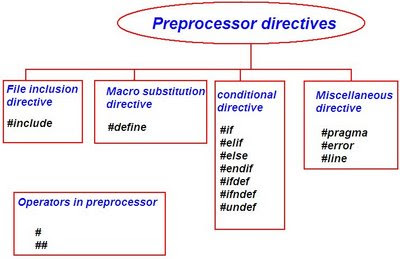

The C Preprocessor is not part of the compiler, but is a separate step in the compilation process. In simplistic terms, a C Preprocessor is just a text substitution tool and they instruct compiler to do required pre-processing before actual compilation.
All preprocessor commands begin with a pound symbol (#). It must be the first nonblank character, and for readability, a preprocessor directive should begin in first column. Following section lists down all important preprocessor directives:

Home